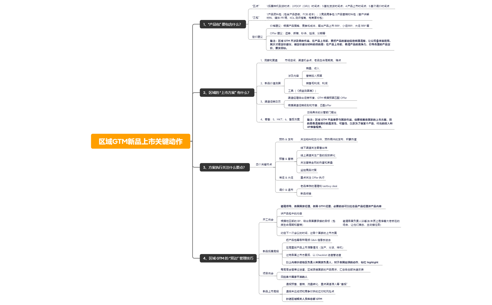

结构正文
区域GTM新品上市关键动作
- 区域GTM新品上市关键动作
- 1、“产品包” 要包含什么？
- “五点”
- 1.拓展样机到货时点；2.PDCP（GR2）时间点；3.首批发货时间点；4.产品上市时间点；5.首次调价时间点
- “三包”
- 1.产品资料包（包含产品参数、FOB 成本）；2.竞品竞争包 3.产品营销材料包（客户讲解材料、媒体 PR 稿、KOL 测评指南、电商素材包）
- 定价建议
- 价格建议：根据产品策略、竞争和成本，输出产品上市 RRP、小促RRP、大促 RRP 等
- Offer 建议：返券、绑赠、秒杀、延保、分期等
- 备注：区域 GTM 不涉及具体作战，在产品上市前，要把产品的基础信息梳理清楚，让公司拿来就能用。其次才是定价建议，做定价建议材料的目的是：在产品上市前，看清产品的竞争力，引导合理的产品定价、要货目标。
- “五点”
- 2、区域的 “上市方案” 有什么？
- 1、洞察和复盘
- 市场空间，渠道机会点，老品生命周期亮、暗点
- 2、新品价值测算
- 涉及内容
- 销量、收入
- 营销投入预算
- 销售毛利润、利润
- 工具（《损益测算表》）
- 涉及内容
- 3、渠道促销日历
- 渠道经理给出促销节奏，GTM 根据预算匹配 Offer
- 根据渠道促销级别和节奏，匹配offer
- 4、零售：5、MKT；6、售后方案
- 交给具体的分管部门输出
- 备注：区域 GTM 不直接参与国家作战，但要统筹各国家的上市方案，目的是看清楚报价的真实性、可靠性，以及为了做某个产品，付出的投入和4P准备程度。
- 1、洞察和复盘
- 3、方案执行关注什么要点？
- 四个关键节点
- 预热 & 发布
- 关注物料和交付件、预热稿件的发布，积累热度
- 预售 & 首销
- 线下渠道关注零售出样
- 线上渠道关注广告的投放转化
- 关注首销全网的热度和声量
- 监控竞品对策
- 常促 & 大促
- 重点关注 Offer 执行
- 调价 & 退市
- 老品库存的清理和 lastbuy deal
- 新品衔接
- 预热 & 发布
- 四个关键节点
- 4、区域 GTM 的 “双边” 管理技巧
- 开工例会
- 邀请领导、各国国家经理、各国 GTM 经理，必要的话可以拉总品产品经理讲产品内容
- 讲产品包中的内容
- 根据地区部的 BP，给出各国要承接的目标（包括生命周期和首销）
- 邀请各国负责人谈看法(本质上是借着大老板在的场合，让他们表态，主动接任务)
- 约定下一次会议的时间，过各个国家的上市方案
- 新品拓展周报
- 把产品包等各种高频 Q&A 信息放进去
- 在周里放产品上市准备情况（生产、分货、样机）
- 过完各国上市方案后，以 Checklist 进度管进度
- 以上内容抄送地区负责人和国家负责人，对于各国延误的动作，标红 highlight
- 项目例会
- 每周周会简单过进度，区域承接国家的产品需求，汇总给总部快速反馈
- 只拉各个国家干活的人
- 新品上市周报
- 通报预售、首销、流量转化，重点渠道准入等 “喜报”
- 通报未达成项和竞争对手的应对和风险点
- 抄送区域相关人员和总部 GTM
- 开工例会
- 1、“产品包” 要包含什么？
查看原导图预览
